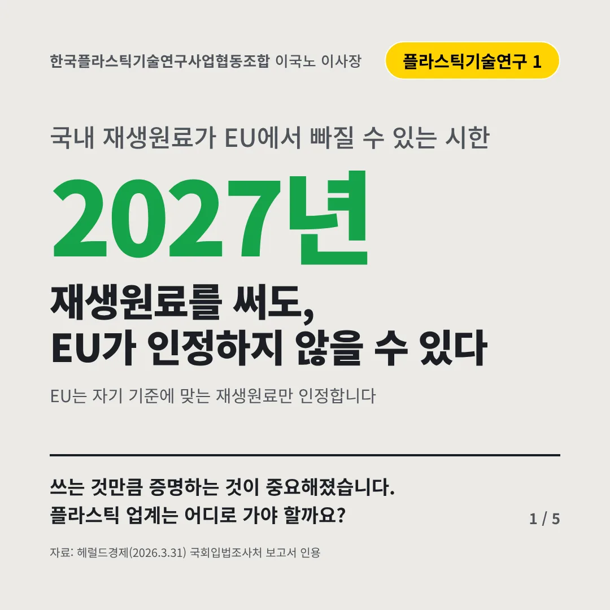
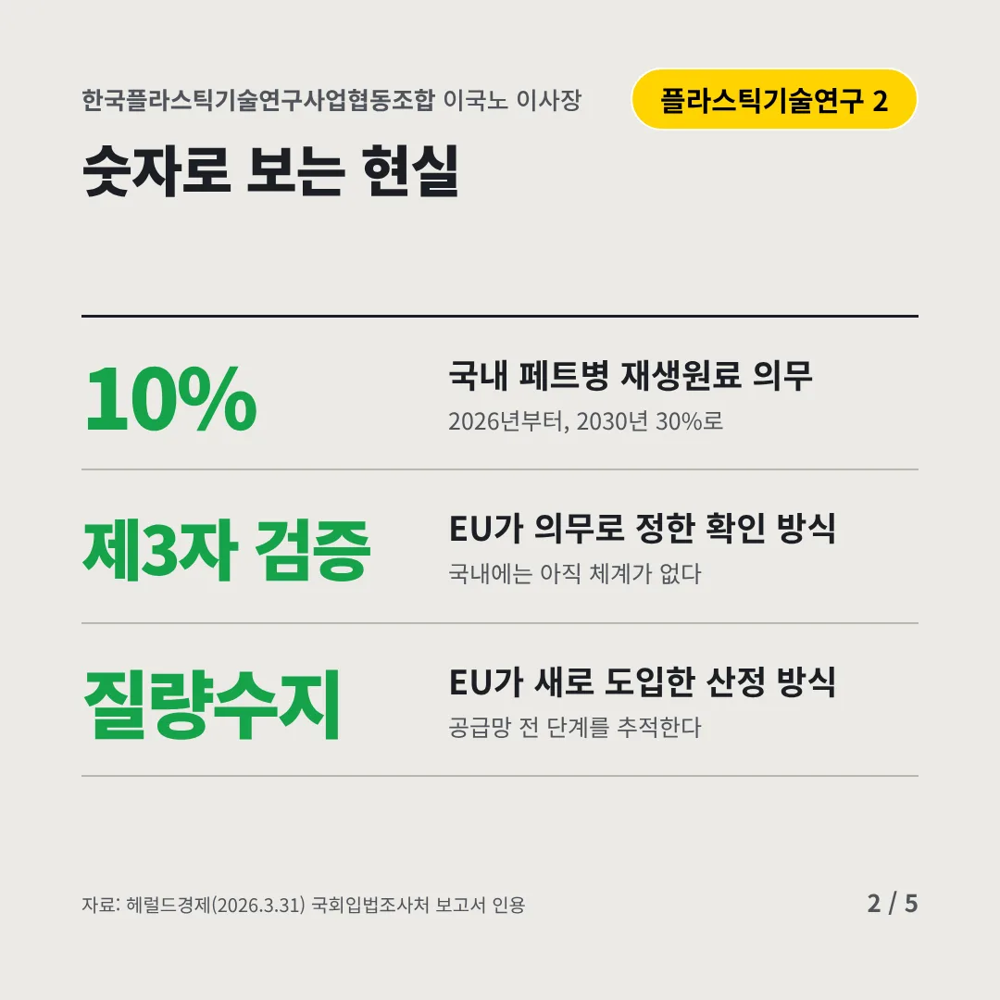
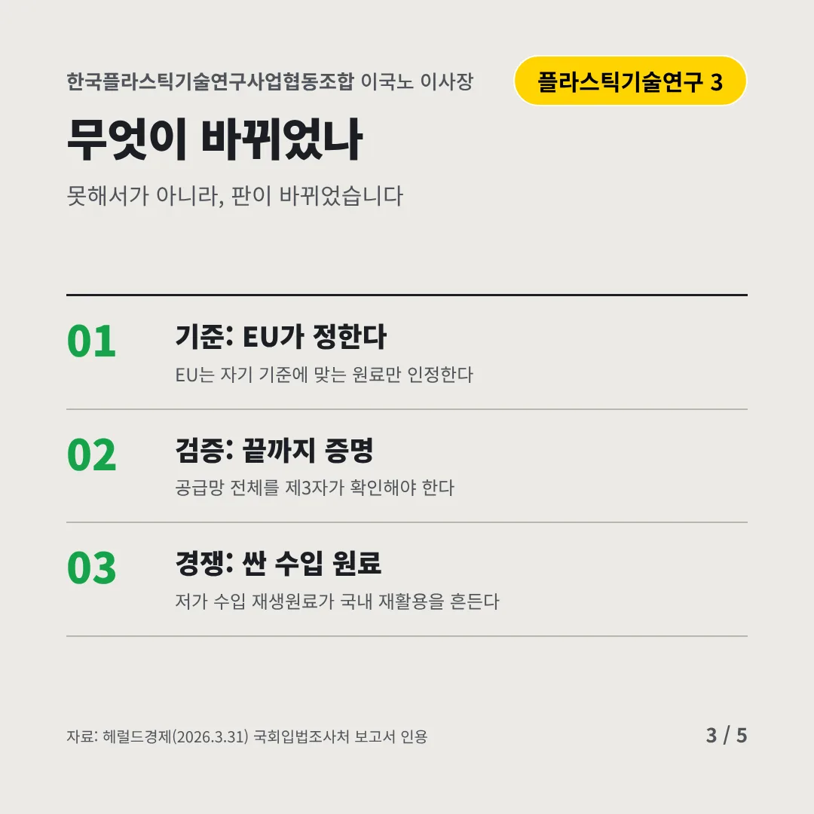
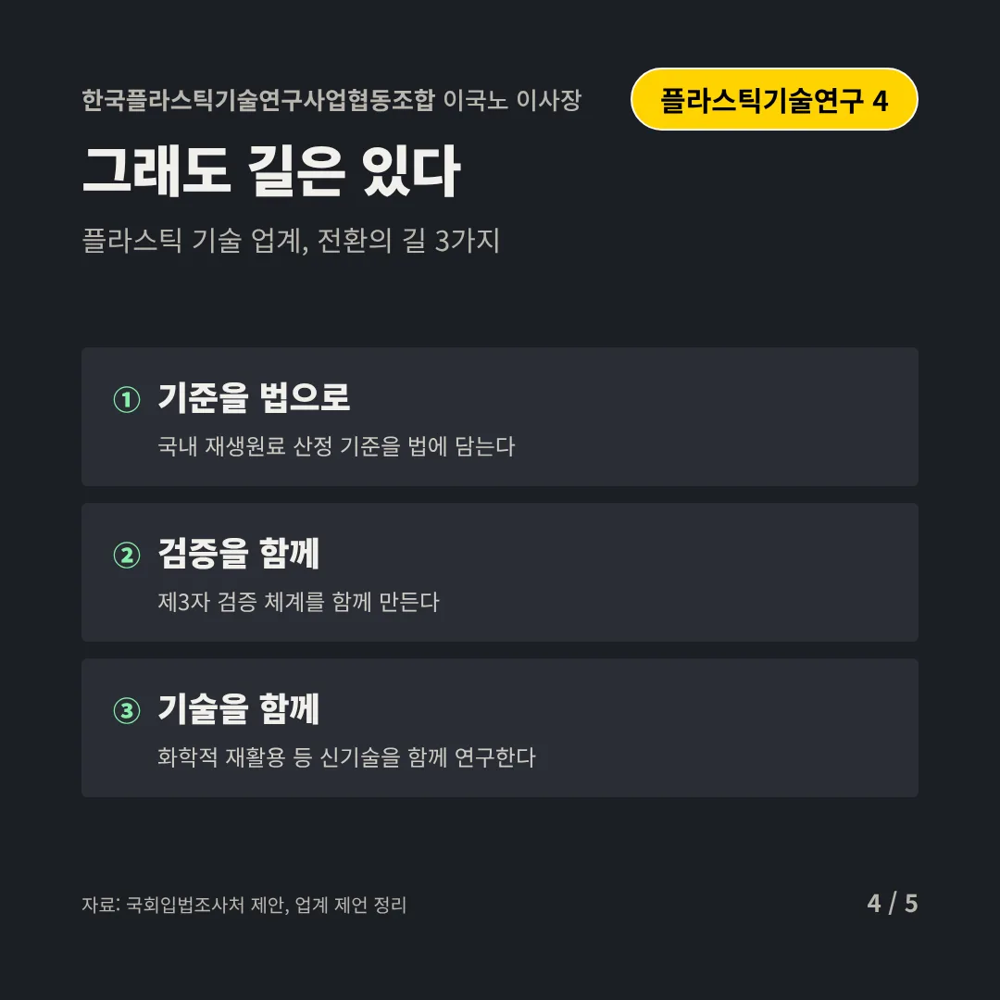
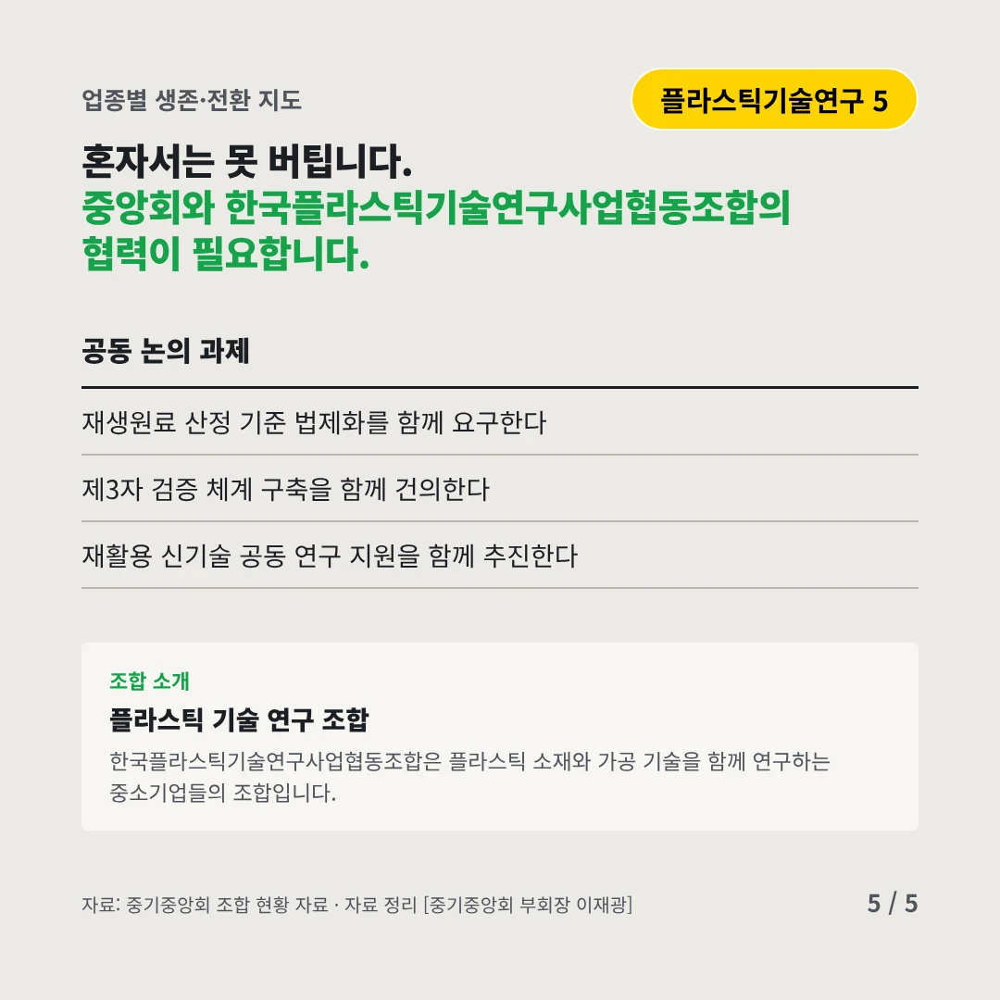
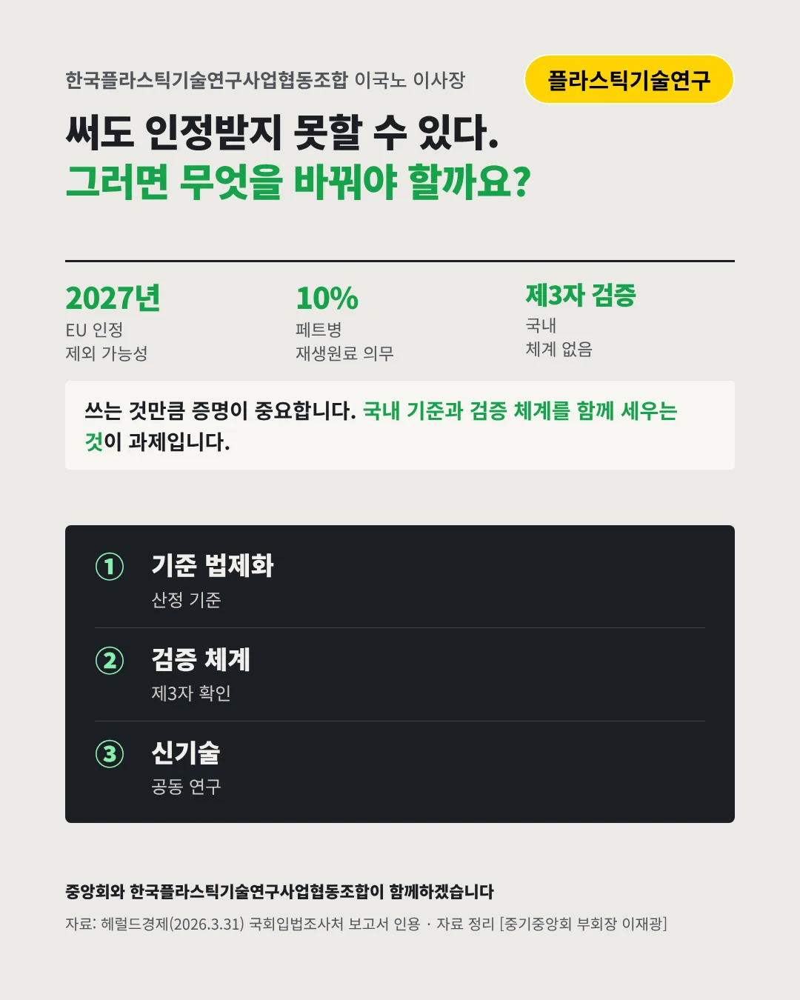

한국플라스틱기술연구사업협동조합
재생원료를 써도, EU가 인정하지 않을 수 있다
2027년 국내 재생원료가 EU에서 빠질 수 있는 시한






쓰는 것만큼 증명하는 것이 중요해졌습니다. 플라스틱 업계는 어디로 가야 할까요?
숫자로 보는 현실
- 10%국내 페트병 재생원료 의무2026년부터, 2030년 30%로
- 제3자 검증EU가 의무로 정한 확인 방식국내에는 아직 체계가 없다
- 질량수지EU가 새로 도입한 산정 방식공급망 전 단계를 추적한다
무엇이 바뀌었나
- 기준: EU가 정한다EU는 자기 기준에 맞는 원료만 인정한다
- 검증: 끝까지 증명공급망 전체를 제3자가 확인해야 한다
- 경쟁: 싼 수입 원료저가 수입 재생원료가 국내 재활용을 흔든다
그래도 길은 있다
- 기준을 법으로국내 재생원료 산정 기준을 법에 담는다
- 검증을 함께제3자 검증 체계를 함께 만든다
- 기술을 함께화학적 재활용 등 신기술을 함께 연구한다
한 장 요약

조합 소개
한국플라스틱기술연구사업협동조합은 플라스틱 소재와 가공 기술을 함께 연구하는 중소기업들의 조합입니다.
자료: 헤럴드경제(2026.3.31), 국회입법조사처 제안